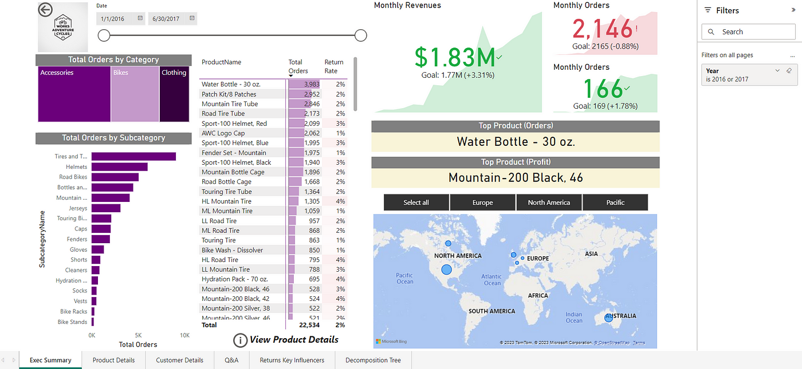

Driven by a passion for transforming data into meaningful insights, my academic journey in Information Systems at Northeastern University has equipped me with a strong foundation in data analysis and business intelligence.
With hands-on experience in Python, SQL, and data visualization tools, I have successfully applied advanced analytical techniques to improve processes and support strategic decision-making across various industries.
From optimizing healthcare systems to enhancing educational experiences through data-driven recommendations, I specialize in data cleaning, feature engineering, and building interactive dashboards that drive actionable results.
As I move forward in my career, I am eager to bring my skills to new challenges and collaborate on impactful, data-driven projects.
Thank you for taking the time to get to know me. I look forward to connecting and exploring opportunities together.


In this project we delve into a dataset of Spotify songs to explore and predict factors influencing streaming success. It encapsulates data preprocessing, exploratory analysis, feature engineering, and machine learning model development.

This project leverages complex SQL queries to analyze Netflix’s content distribution, popular ratings, and release trends by year and country. Insights into regional content this analysis provides a comprehensive view of Netflix’s offerings.

The Coffee Sales project involves advanced formulas followed by building pivot tables and charts. With added slicers and timelines for interactive filtering, the project culminated in a visually dynamic sales dashboard.
In this end-to-end project, I utilized Google Compute Engine for data transformation with MAGE, and BigQuery for data warehousing. I designed a dimensional data model and visualized key insights using Looker Studio, analyzing TLC trip records,locations and fares to create an interactive dashboard.

Created a Netflix dashboard in Tableau that visualizes key insights such as content distribution, popular ratings, and release trends.

I used the AdventureWorksLT data model to query and extract insights using SQL, then visualized the results in Power BI.

This project explores historical race data to uncover insights about runners, their performance, and race conditions. It encompasses data cleaning, EDA, statistical modeling and data visualization to effectively communicate trends and significant findings.